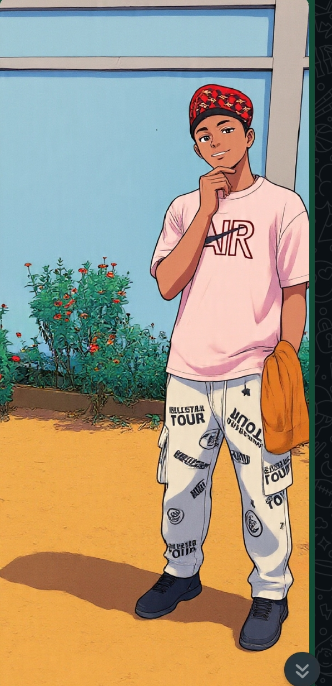

01 / 03Organisation
NActe · Conseil · Confiance
Réalisation
d'un notariat
Imaginer un cadre clair et sérieux pour accompagner les personnes dans leurs démarches.
↗Portfolio personnel · 2024/25
Élève de terminale B, basketteur et curieux. J'aime les idées simples, les projets utiles et le calme qui permet de bien faire les choses.

ENZO / 2025Je m'appelle Enzo Yangandia. Entre les cours, le terrain et mes projets, je cherche à comprendre comment une idée peut devenir une réalisation concrète.
Échanger avec moi ↗Sélection de travaux
Des expériences scolaires et humaines qui m'ont appris à organiser, décider et avancer ensemble.
Imaginer un cadre clair et sérieux pour accompagner les personnes dans leurs démarches.
↗Une action tournée vers l'écoute, la solidarité et la dignité de chacun.
↗Mon chemin
Les premières bases, les rencontres et l'envie de comprendre.
Un parcours qui se précise, entre ambition scolaire et projets concrets.
Je prépare la suite avec méthode, curiosité et constance.